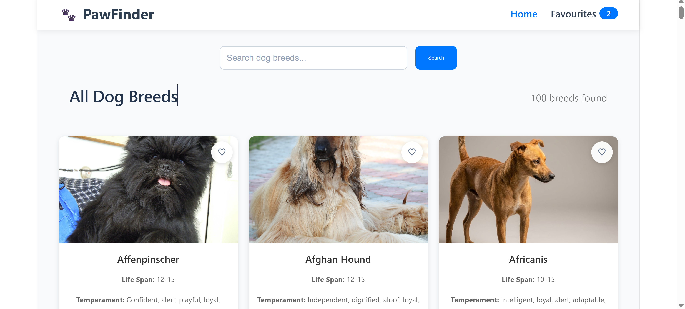

Case Study / 01
PawFinder
Designing a calmer path from dog discovery to meaningful next steps.

The Brief
Make discovery feel clear.
PawFinder is a responsive dog discovery platform built around approachable browsing, useful filtering and a clear route into breed detail. The goal was to make a content-heavy experience feel friendly instead of overwhelming.
My Approach
Structure before decoration.
I focused on reusable React components, shared state and progressive disclosure. Search and filtering stay close to the user’s intent, while responsive cards preserve the same hierarchy across screen sizes.
What I Learned
State is part of the interface.
The most important decisions were not visual tricks. They were the rules that kept filters, favourites and details in sync. Good frontend work makes those rules feel invisible.
Outcome
A useful, deployable build.
The result is a live React application with a focused discovery flow, responsive behaviour and a codebase that can grow into a deeper adoption experience.